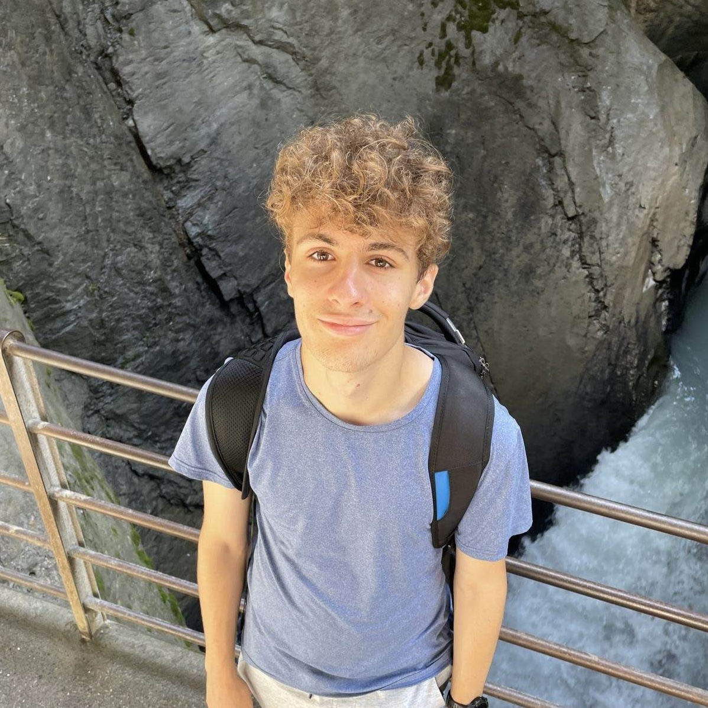

About Me
Hi there! My name is Davide Chiesa, and I'm a freshman majoring in
Computer Science and Mathematics at the University of Wisconsin-Madison. I currently
specialize in object-oriented programming, though I'm interested in exploring other
realms of CS such as Machine Learning and Cybersecurity. Outside of academics, I enjoy
recreational long distance running and weightlifting. I'm also passionate about cosmology,
religion, and politics.